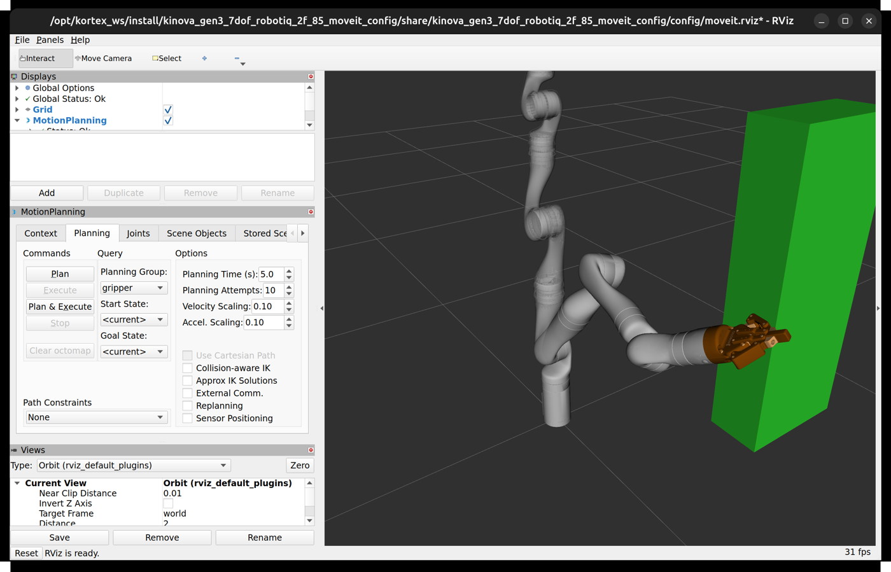

B4 · MoveIt 2
You say where the hand should go. MoveIt finds a path that does not hit anything, and sends it to the arm. You will run it on the fake arm, add a box to the world, and watch the path bend around it.
1. Goal
In B3 you solved inverse kinematics yourself. A real task needs more: a motion that is smooth, respects the joint limits, and does not hit the arm itself or anything else in the room. That is motion planning, and MoveIt 2 is the ROS 2 package that does it. In this lesson you do not write a planner; you ask one.
At the end of this lesson you will have:
- started MoveIt on the fake arm and listed what it offers (the
move_groupnode: an action, services and topics), - sent a "put the hand here" goal from a program (Python and C++), and seen the hand arrive where
tf2_echosays, - put a box into MoveIt's picture of the world, and seen the same goal give a longer path that goes around it,
- seen what MoveIt answers when a goal cannot be reached.
2. Concepts
What MoveIt is
MoveIt is not one program but a set of pieces around one node, move_group. It holds a model of the robot (the URDF of B1 plus some extra information), a model of the world, a planner, and a connection to the controller of A7. Your program never plans: it sends a request to move_group and gets an answer.
move_group. Everything below move_group is lesson A7.The planning group, from the SRDF
The URDF says how the robot is built. MoveIt also needs to know which joints belong together. That comes from a second file, the SRDF (config/gen3.srdf in the MoveIt package of the Gen3). It defines two planning groups:
manipulator: the chain frombase_linktoend_effector_link, the seven arm joints (the sameend_effector_linkas in B2 and B3),gripper: the finger joints of the Robotiq gripper.
It also defines named poses such as Home, Retract and Vertical for the arm. Every request names the group it is for. This lesson moves only the manipulator.
The planning scene: the world MoveIt knows
MoveIt checks every path against the planning scene: the robot's current joint values plus a list of collision objects (boxes, spheres, meshes), each with a name and a pose. It also checks the arm against itself. If an object is not in the scene, MoveIt does not know it exists. A box on your real table is invisible until somebody puts it in the scene, from a program, from a camera, or by hand in RViz.
What a plan is
- Goal. A pose is not a set of joint angles, so MoveIt first needs joint angles: it uses an IK solver (a plugin; here KDL, a numerical method in the family of B3).
- Search. The planner (OMPL,
RRTConnecthere) looks for a path through joint space: it tries random joint settings, throws away those in collision, and links the rest from the start to the goal. Because it is random, two runs give two different paths. - Timing. The path is only a list of joint settings. MoveIt adds times, respecting the speed and acceleration limits, to make a trajectory (the list of points with times that you saw in A7).
- Execute. The trajectory goes to the controller as a
FollowJointTrajectoryaction goal (A3, A7).
Planning and executing are separate steps. The programs below do both, in one request.
3. Do it
-
Get the programs
The package
code/b4-moveithas two programs in Python and in C++:move_pose(plan and move the hand to a pose) andadd_box(put a box into the planning scene, or take it out).host Open a terminal in the
ros2-tutorialfolder and enter a container (this is T1):docker/run_ros2.shhost Open a terminal in the
ros2-tutorialfolder (this is T1).container
cd code/b4-moveit colcon build source install/setup.bashThe build takes longer than B2 and B3 (it compiles against MoveIt) and ends with the usual
Finished <<< b4_moveit. The C++ compiler may print notes about an obsolete header or a deprecated package: they are harmless. -
Start MoveIt on the fake arm
Close any
gen3.launch.pyfrom an earlier lesson (Ctrl+C in its terminal): this launch starts its ownros2_control, and two would clash. Then open a new terminal (T2), enter a container, and start the MoveIt launch file that ships with the Kinova packages. It starts everything: the fake arm (as in A7), the controllers,robot_state_publisher,move_groupand RViz with the MoveIt panel.host T2:
docker/run_ros2.shcontainer T2:
ros2 launch kinova_gen3_7dof_robotiq_2f_85_moveit_config robot.launch.py robot_ip:=yyy.yyy.yyy.yyy use_fake_hardware:=trueWait for this line, in green (about 10 seconds):
[move_group-7] You can start planning now!
An RViz window opens with the arm. In the same output you will see a few messages that look bad and are not:
Could not enable FIFO RT scheduling policy(the real-time priority, not needed for a fake arm),No 3D sensor plugin(s) defined for octomap updates(no camera is connected, so no occupancy map),Overrun detectedduring start-up,Action server: /recognize_objects not availablefrom RViz (an optional object-recognition feature), a longSEVERE WARNING ... namespace collisionabout an RViz plugin, andNo active joints or end effectors found for group 'gripper'(RViz starts with the Planning Group set togripper, see the picture below).When you stop the launch with Ctrl+C,
move_groupmay end with a stack trace andSegmentation fault. It happens while shutting down, after everything has stopped, and did not affect anything in this lesson. (I saw it in a reader's run; I did not investigate the cause.)RViz does not open?If T2 prints
Unable to create a suitable GLXContextand RViz dies, the container cannot get OpenGL from your display (a missing GPU toolkit, a remote or virtual display). Everything else in this lesson still works without the window, since the programs talk tomove_group, not to RViz. Addlaunch_rviz:=falseto the command to start without it. (I did not test software rendering on a machine with this problem.)
The MoveIt RViz window, as it will look at the end of step 5 (with a green box in the scene). The left panels are MoveIt's: Planning has the Plan and Execute buttons. The camera shows only part of the box. Note the Planning Group box: it starts on gripper, change it tomanipulatorbefore you plan for the arm. -
See what
move_groupoffersOpen another new terminal (T3), enter a container with
docker/run_ros2.sh(local install: just a terminal), and look at the ROS graph the way you did in A1 to A3.container T3:
ros2 action list -t | grep -E "move_action|execute_traj" ros2 service list | grep -E "^/(compute_ik|compute_fk|plan_kinematic_path|apply_planning_scene|get_planning_scene|compute_cartesian_path)$" ros2 topic list | grep -E "planning_scene|display_planned|monitored"/execute_trajectory [moveit_msgs/action/ExecuteTrajectory] /move_action [moveit_msgs/action/MoveGroup] /apply_planning_scene /compute_cartesian_path /compute_fk /compute_ik /get_planning_scene /plan_kinematic_path /display_planned_path /monitored_planning_scene /planning_scene /planning_scene_world
That is the whole interface. The two programs of this lesson use two of these:
move_poseuses the action/move_action: one goal that says "plan and (optionally) execute".add_boxuses the service/apply_planning_scene: it changes the world MoveIt knows.
The others you can call from the command line. For example
/compute_ikis MoveIt's own IK, the same job asik_gen3of B3. Ask it for the hand pose of B2's reference joints (the quaternion is the same orientation as roll, pitch, yaw of −60.494°, 18.394°, −64.003°):ros2 service call /compute_ik moveit_msgs/srv/GetPositionIK "{ik_request: {group_name: manipulator, pose_stamped: {header: {frame_id: base_link}, pose: {position: {x: 0.674, y: -0.030, z: 0.649}, orientation: {x: -0.3485, y: 0.3806, z: -0.3836, w: 0.7658}}}, timeout: {sec: 1}}}"The answer is long. These are the parts that matter (the names and values are in the
solution, the success code iserror_code; I removed the rest):solution: joint_1 … joint_7 = -0.1386 0.6000 0.4164 1.2238 0.4005 -0.8666 0.4881 error_code: val=1
val=1isSUCCESS. Compare with B3: this is another member of the family. It is not the (0.3, 0.6, −0.4, 1.2, 0.5, −0.7, 0.9) of B2 (joint 1 is −0.139 here, joint 3 is 0.416, joint 7 is 0.488), yet I put these seven values throughfk_gen3of B2 and the hand comes out at [0.674, −0.030, 0.649], RPY (−60.489°, 18.395°, −63.997°). Which member the solver returns depends on where it starts. -
Plan and move to a pose
move_posesends one goal to/move_action: groupmanipulator, the hand (end_effector_link) at a pose in the framebase_link(as in B2). MoveIt takes the pose as constraints: the position within 1 mm of the target, each axis of the orientation within 0.01 rad. It takes the orientation as a quaternion (four numbers that describe a rotation); the program converts your roll, pitch, yaw. Speed and acceleration are limited to 30% of the maximum, so the motion is easy to watch.#!/usr/bin/env python3 """Ask MoveIt to move the hand to a pose: move_pose X Y Z ROLL PITCH YAW (metres, degrees).""" import math import sys import rclpy from rclpy.action import ActionClient from rclpy.node import Node from geometry_msgs.msg import Pose from moveit_msgs.action import MoveGroup from moveit_msgs.msg import (BoundingVolume, Constraints, MoveItErrorCodes, OrientationConstraint, PositionConstraint) from shape_msgs.msg import SolidPrimitive GROUP = "manipulator" BASE = "base_link" TIP = "end_effector_link" def quaternion_from_rpy(roll, pitch, yaw): cr, sr = math.cos(roll / 2), math.sin(roll / 2) cp, sp = math.cos(pitch / 2), math.sin(pitch / 2) cy, sy = math.cos(yaw / 2), math.sin(yaw / 2) return (sr * cp * cy - cr * sp * sy, # x cr * sp * cy + sr * cp * sy, # y cr * cp * sy - sr * sp * cy, # z cr * cp * cy + sr * sp * sy) # w def error_name(code): for name in dir(MoveItErrorCodes): if name.isupper() and getattr(MoveItErrorCodes, name) == code: return name return str(code) def main(): if len(sys.argv) != 7: sys.exit("usage: move_pose X Y Z ROLL PITCH YAW (metres, degrees)") x, y, z = map(float, sys.argv[1:4]) roll, pitch, yaw = (math.radians(float(a)) for a in sys.argv[4:7]) rclpy.init() node = Node("move_pose") client = ActionClient(node, MoveGroup, "move_action") if not client.wait_for_server(timeout_sec=10.0): sys.exit("no /move_action: is move_group running?") target = Pose() target.position.x, target.position.y, target.position.z = x, y, z qx, qy, qz, qw = quaternion_from_rpy(roll, pitch, yaw) target.orientation.x, target.orientation.y = qx, qy target.orientation.z, target.orientation.w = qz, qw # position: the hand origin must lie inside a 1 mm sphere around the target sphere = SolidPrimitive(type=SolidPrimitive.SPHERE, dimensions=[0.001]) position = PositionConstraint() position.header.frame_id = BASE position.link_name = TIP position.constraint_region = BoundingVolume(primitives=[sphere], primitive_poses=[target]) position.weight = 1.0 # orientation: each axis within 0.01 rad of the target orientation = OrientationConstraint() orientation.header.frame_id = BASE orientation.link_name = TIP orientation.orientation = target.orientation orientation.absolute_x_axis_tolerance = 0.01 orientation.absolute_y_axis_tolerance = 0.01 orientation.absolute_z_axis_tolerance = 0.01 orientation.weight = 1.0 goal = MoveGroup.Goal() goal.request.group_name = GROUP goal.request.num_planning_attempts = 5 goal.request.allowed_planning_time = 5.0 goal.request.max_velocity_scaling_factor = 0.3 goal.request.max_acceleration_scaling_factor = 0.3 goal.request.goal_constraints = [Constraints(position_constraints=[position], orientation_constraints=[orientation])] goal.planning_options.plan_only = False # plan AND execute send = client.send_goal_async(goal) rclpy.spin_until_future_complete(node, send) handle = send.result() if not handle.accepted: sys.exit("goal rejected") done = handle.get_result_async() rclpy.spin_until_future_complete(node, done) result = done.result().result print(f"result: {error_name(result.error_code.val)}") points = result.planned_trajectory.joint_trajectory.points if points: last = points[-1] print(f"trajectory: {len(points)} points, {last.time_from_start.sec + last.time_from_start.nanosec * 1e-9:.2f} s") node.destroy_node() rclpy.shutdown() sys.exit(0 if result.error_code.val == MoveItErrorCodes.SUCCESS else 1) if __name__ == "__main__": main()// Ask MoveIt to move the hand to a pose: move_pose X Y Z ROLL PITCH YAW (metres, degrees) #include <cmath> #include <cstdio> #include <cstdlib> #include <memory> #include <thread> #include <geometry_msgs/msg/pose.hpp> #include <moveit/move_group_interface/move_group_interface.hpp> #include <rclcpp/rclcpp.hpp> #include <tf2/LinearMath/Quaternion.h> int main(int argc, char** argv) { rclcpp::init(argc, argv); if (argc != 7) { std::fprintf(stderr, "usage: move_pose X Y Z ROLL PITCH YAW (metres, degrees)\n"); return 2; } const double x = std::atof(argv[1]), y = std::atof(argv[2]), z = std::atof(argv[3]); const double deg = M_PI / 180.0; tf2::Quaternion q; q.setRPY(std::atof(argv[4]) * deg, std::atof(argv[5]) * deg, std::atof(argv[6]) * deg); auto node = std::make_shared<rclcpp::Node>("move_pose"); // MoveGroupInterface needs the node to be spinning, so spin it in a thread rclcpp::executors::SingleThreadedExecutor executor; executor.add_node(node); std::thread spinner([&executor]() { executor.spin(); }); moveit::planning_interface::MoveGroupInterface group(node, "manipulator"); group.setEndEffectorLink("end_effector_link"); group.setPoseReferenceFrame("base_link"); group.setNumPlanningAttempts(5); group.setPlanningTime(5.0); group.setMaxVelocityScalingFactor(0.3); group.setMaxAccelerationScalingFactor(0.3); geometry_msgs::msg::Pose target; target.position.x = x; target.position.y = y; target.position.z = z; target.orientation.x = q.x(); target.orientation.y = q.y(); target.orientation.z = q.z(); target.orientation.w = q.w(); group.setPoseTarget(target); moveit::planning_interface::MoveGroupInterface::Plan plan; const auto planned = group.plan(plan); int status = 1; if (planned == moveit::core::MoveItErrorCode::SUCCESS) { const auto& pts = plan.trajectory.joint_trajectory.points; const auto& last = pts.back().time_from_start; const auto executed = group.execute(plan); std::printf("result: %s\n", executed == moveit::core::MoveItErrorCode::SUCCESS ? "SUCCESS" : "EXECUTION FAILED"); std::printf("trajectory: %zu points, %.2f s\n", pts.size(), last.sec + last.nanosec * 1e-9); status = executed == moveit::core::MoveItErrorCode::SUCCESS ? 0 : 1; } else { std::printf("result: PLANNING FAILED (error code %d)\n", planned.val); } executor.cancel(); spinner.join(); rclcpp::shutdown(); return status; }The C++ program uses
MoveGroupInterface, MoveIt's C++ wrapper over the same action: it builds the goal for you. It needs its node to spin in another thread while the program waits for the plan.MoveIt's Python package (
moveit_py) is not part of the image, so the Python version talks to the action directly. The C++ wrapper and this Python code send the same message.Go to the two poses of B2 and B3 (hand poses at joint 1 = 0.3 and = −0.8 rad), A and B, and back. Watch RViz while it moves. container T3:
cd /workspace/code/b4-moveit source install/setup.bash ros2 run b4_moveit move_pose.py 0.674 -0.030 0.649 -60.494 18.394 -64.003 ros2 run b4_moveit move_pose.py 0.332 0.588 0.649 -60.494 18.394 -0.977 ros2 run b4_moveit move_pose.py 0.674 -0.030 0.649 -60.494 18.394 -64.003cd /workspace/code/b4-moveit source install/setup.bash ros2 run b4_moveit move_pose 0.674 -0.030 0.649 -60.494 18.394 -64.003 ros2 run b4_moveit move_pose 0.332 0.588 0.649 -60.494 18.394 -0.977 ros2 run b4_moveit move_pose 0.674 -0.030 0.649 -60.494 18.394 -64.003Each run takes a few seconds: it plans, then the arm moves in RViz. The three results (Python; the point counts and times vary from run to run, it is a random planner):
result: SUCCESS trajectory: 32 points, 3.08 s result: SUCCESS trajectory: 29 points, 2.72 s result: SUCCESS trajectory: 22 points, 2.07 s
The C++ program also shows MoveIt's own log lines in front of each result (
Planning request accepted,Execute request success!and so on), and one warning,No kinematics plugins defined, which is about the client side and is harmless. The last two lines of each run are the ones above (C++: 32 points 3.08 s, 29 points 2.73 s, 22 points 2.09 s).Now the check, as in B2: where does ROS say the hand is? In T3, while the arm sits at pose B (the second run):
ros2 run tf2_ros tf2_echo base_link end_effector_link- Translation: [0.332, 0.588, 0.649] - Rotation: in RPY (degree) [-60.459, 18.425, -0.965]
(Stop it with Ctrl+C. This output is from the C++ run; the Python run lands in the same place.) The target was
0.332 0.588 0.649and RPY−60.494 18.394 −0.977: the hand is within a millimetre and a tenth of a degree, as the tolerances allow. The chain of lessons closes here: you wrote a hand pose; MoveIt did the IK (B3), the planning and the timing; the controller of A7 moved the joints; the frames of B2 and A6 report where the hand is. -
Add a box and plan again
The straight way from A to B swings the arm around its base, through the empty space. Now put a box in that space.
add_boxbuilds aCollisionObject(a name, a box shape with three sizes, and a pose inbase_link) and sends it in aPlanningScenemessage withis_diff = true, which means "change the scene, do not replace it". The same program withremovetakes it out.#!/usr/bin/env python3 """Put a box into the planning scene: add_box NAME X Y Z SX SY SZ or add_box NAME remove""" import sys import rclpy from rclpy.node import Node from geometry_msgs.msg import Pose from moveit_msgs.msg import CollisionObject, PlanningScene from moveit_msgs.srv import ApplyPlanningScene from shape_msgs.msg import SolidPrimitive def main(): args = sys.argv[1:] if not (len(args) == 7 or (len(args) == 2 and args[1] == "remove")): sys.exit("usage: add_box NAME X Y Z SX SY SZ | add_box NAME remove") name = args[0] obj = CollisionObject() obj.header.frame_id = "base_link" obj.id = name if args[1] == "remove": obj.operation = CollisionObject.REMOVE else: x, y, z, sx, sy, sz = map(float, args[1:7]) obj.primitives = [SolidPrimitive(type=SolidPrimitive.BOX, dimensions=[sx, sy, sz])] pose = Pose() pose.position.x, pose.position.y, pose.position.z = x, y, z pose.orientation.w = 1.0 obj.primitive_poses = [pose] obj.operation = CollisionObject.ADD scene = PlanningScene() scene.is_diff = True # change the scene, do not replace it scene.world.collision_objects = [obj] rclpy.init() node = Node("add_box") client = node.create_client(ApplyPlanningScene, "apply_planning_scene") if not client.wait_for_service(timeout_sec=10.0): sys.exit("no /apply_planning_scene: is move_group running?") future = client.call_async(ApplyPlanningScene.Request(scene=scene)) rclpy.spin_until_future_complete(node, future) print("scene updated" if future.result().success else "scene update failed") node.destroy_node() rclpy.shutdown() if __name__ == "__main__": main()// Put a box into the planning scene: add_box NAME X Y Z SX SY SZ or add_box NAME remove #include <cstdio> #include <cstdlib> #include <cstring> #include <memory> #include <string> #include <thread> #include <vector> #include <geometry_msgs/msg/pose.hpp> #include <moveit/planning_scene_interface/planning_scene_interface.hpp> #include <moveit_msgs/msg/collision_object.hpp> #include <rclcpp/rclcpp.hpp> #include <shape_msgs/msg/solid_primitive.hpp> int main(int argc, char** argv) { rclcpp::init(argc, argv); const bool remove = argc == 3 && std::strcmp(argv[2], "remove") == 0; if (!(argc == 8 || remove)) { std::fprintf(stderr, "usage: add_box NAME X Y Z SX SY SZ | add_box NAME remove\n"); return 2; } const std::string name = argv[1]; auto node = std::make_shared<rclcpp::Node>("add_box"); rclcpp::executors::SingleThreadedExecutor executor; executor.add_node(node); std::thread spinner([&executor]() { executor.spin(); }); moveit::planning_interface::PlanningSceneInterface scene; bool ok = true; if (remove) { scene.removeCollisionObjects({name}); } else { moveit_msgs::msg::CollisionObject obj; obj.header.frame_id = "base_link"; obj.id = name; shape_msgs::msg::SolidPrimitive box; box.type = box.BOX; box.dimensions = {std::atof(argv[5]), std::atof(argv[6]), std::atof(argv[7])}; geometry_msgs::msg::Pose pose; pose.position.x = std::atof(argv[2]); pose.position.y = std::atof(argv[3]); pose.position.z = std::atof(argv[4]); pose.orientation.w = 1.0; obj.primitives.push_back(box); obj.primitive_poses.push_back(pose); obj.operation = obj.ADD; ok = scene.applyCollisionObjects({obj}); } std::printf(ok ? "scene updated\n" : "scene update failed\n"); executor.cancel(); spinner.join(); rclcpp::shutdown(); return ok ? 0 : 1; }The C++ version uses MoveIt's
PlanningSceneInterface, which sends the same message.The box is 0.15 m by 0.3 m by 0.8 m, centred on the point halfway along the swing, (0.59, 0.327, 0.65). First go back to A (you already did), then add the box and ask for B again. container T3:
ros2 run b4_moveit add_box.py wall 0.59 0.327 0.65 0.15 0.3 0.8 ros2 run b4_moveit move_pose.py 0.332 0.588 0.649 -60.494 18.394 -0.977ros2 run b4_moveit add_box wall 0.59 0.327 0.65 0.15 0.3 0.8 ros2 run b4_moveit move_pose 0.332 0.588 0.649 -60.494 18.394 -0.977scene updated result: SUCCESS trajectory: 81 points, 7.92 s
A green box appears in RViz (that is the picture of step 2). The same goal as before, the same start, but the trajectory now has 81 points and 7.92 s instead of 29 points and 2.72 s: the planner had to go around the box, and so it took a longer way. (C++ gave 87 points and 8.59 s: another random path.) The hand still ends at B, because the box is not on the target, only on the way.
Take the box out and the short path is back:
ros2 run b4_moveit add_box.py wall removeros2 run b4_moveit add_box wall removescene updated
Run it again and it says
scene update failed: there is nowallany more, and removing something that is not there is an error. -
The same in RViz, with the mouse
Not run by the authorI could not click in RViz from my test setup, so this step is described from the panel and the source, and not from a run. Tell me where it differs.
The MoveIt panel in RViz does by hand what the programs do. In the MotionPlanning panel, tab Planning:
- Set Planning Group to
manipulator. - Grab the interactive marker on the hand in the 3D view, and drag or rotate it. The orange arm is the goal state.
- Press Plan to see the path, Execute to run it, or Plan & Execute for both. Under Scene Objects you can add boxes the same way
add_boxdoes.
The marker is the same thing as the target of
move_pose, and Plan & Execute sends the same request to the same action. - Set Planning Group to
4. Check
- T2 printed
You can start planning now!and/move_actionis in the action list. - Each
move_poseprintedresult: SUCCESSandtf2_echoshows the hand at the target, within a millimetre. - With the box, the same goal gives a longer trajectory (more points, more seconds), and without it the short one is back.
5. Exercise
Put a box around the goal: a 0.2 m cube centred on pose B (0.332, 0.588, 0.649). Ask for B. What does move_pose print, and how long does it take? Where can you read why? Remove the box afterwards.
Answer
ros2 run b4_moveit add_box.py cage 0.332 0.588 0.649 0.2 0.2 0.2
ros2 run b4_moveit move_pose.py 0.332 0.588 0.649 -60.494 18.394 -0.977
ros2 run b4_moveit add_box.py cage removeros2 run b4_moveit add_box cage 0.332 0.588 0.649 0.2 0.2 0.2
ros2 run b4_moveit move_pose 0.332 0.588 0.649 -60.494 18.394 -0.977
ros2 run b4_moveit add_box cage removescene updated result: FAILURE scene updated
In C++ the middle line is result: PLANNING FAILED (error code 99999), after an [ERROR] ... MoveGroupInterface::plan() failed or timeout reached line.
The run takes about five seconds (the planning time limit of the program) and exits with status 1. 99999 is the generic FAILURE code: it says that planning failed, not why. The reason is in T2, the terminal of move_group: Unable to sample any valid states for goal tree. The goal itself is inside the box, so every pose MoveIt tries for it is in collision, and the planner cannot even start from the goal side. The lesson of this exercise: a failed plan is an answer, not a crash; read the move_group terminal, which says more than the error code.
6. Recap
- MoveIt is a set of pieces around the node
move_group. You send a goal and it plans, times and executes a trajectory through the controller of A7. - The SRDF defines the planning groups (
manipulator,gripper) and named poses; every request names a group. - The planning scene is the world MoveIt checks: the robot's joints plus collision objects. What is not in the scene does not exist for the planner.
- A plan: IK for the goal (B3), a random search through joint space (OMPL), then timing within the speed limits. Random, so two runs differ.
- Interfaces: the action
/move_action(plan and execute), the service/apply_planning_scene, and services such as/compute_ik,/compute_fkand/plan_kinematic_path. - With a box in the way the same goal gave a longer path; with the goal inside a box it gave
FAILUREand an explanation in themove_grouplog. - The same launch file and programs work on the real arm: only
use_fake_hardwareand the realrobot_ipchange. That part is not tested here.